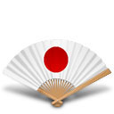
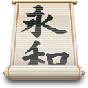
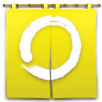
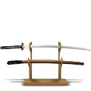

February
2002
Pixel Feng shui by
Gary Gehiere
This icon collection has been a labour of love for me - I've wanted to do a themed Feng Shui/ Zen objects set for a long time but always found myself thwarted by the small canvas size available under the old Mac operating systems.
The greatest success I'd had was a single icon portraying a 'bonsai' (potted tree) that I released in a set 2 years ago.
But now with the proliferation of MacOS X and the enlarged canvas size I've thrown myself headlong at the subject again, and this time I feel successful.
Though the body of work here represents hours of research, making sketches and leafing through books in search of inspiration, none of these icons are actually photographs. Each is drawn completely by hand in Adobe Photoshop, with gratuitous use of the paintbrush and line tools, and the 'gaussian blur' and 'add noise' filters for leaf and stone effects.
I am very proud of all I've learned making these icons, and have discovered a skill in illustration that I didn't know I had.
And while speaking of 'firsts', this is the first year I've entered the Iconfactory's 'Pixelpalooza' contest. I've always shyed from the yearly contest because I didn't feel that my silly, fragile ego could handle losing to all the great artists who enter and win every year, and so I avoided the whole thing.
But perhaps
the subject matter of this set has had some effect on my moral, because
for the first time I'm not afraid of losing, I'm just happy to be entering
and sharing a set that I loved making.

There are many definitions of what the art of Feng Shui is all about, but it can probably be agreed that it is the art of bringing good energy into living spaces and the lives of those people who visit those spaces. Through arrangement of structures, furniture and decoration good energy is encouraged and bad energy is deflected.
While a room doesn't have to be themed with Asian objects or design in order to adhere to Feng Shui principles that is the commonly imagined style of a place with good Feng Shui.
I really
know very little about Feng Shui.

If you like to read 'ReadMe's, then you're in for a special treat! I've written a little explaination for all the icons in the set, which you are welcome to skip over.
(By the way, the icons used here in the 'ReadMe' are some of the 'rejects' that I made for the set but didn't include in icon form, for one reason or another. They won't be repeated in the set!)
Tsukubai - This is a water basin found in traditional gardens, and fed by a spring. This was origianlly just the basin, but I added the ladel and bamboo rod afterwards because it lacked the grace of the other icons in the set, and because the general oval form of the basin was boring.
Ishidourou - This lantern was compiled from 3 traditional designs so it's pretty original. I know that Dave Brasgalla (of the Iconfactory) has already done an icon depicting a snow lantern, but I really wanted to include one in this set so I made my own.
Gunsen - A fan, kind of a military design.
Chouchin Shinku - This lantern was inspired by the huge lanterns that hang at each gate of Asakusa Temple in Japan. 'Shinku' is a Japanese word for crimson.
Katana & Sheath - Pretty self explanitory, I textured the sheath with an oak grain to try and make the weapon seem less offensive and a little more rustic. The artwork I created for this icon is huge, over 1000 pixels wide. Originally I illustrated some wrapping on the sheath, but it got lost when I shrunk the illustration down.
Koi - Those wonderful, huge goldfish are a favourite fish of mine. If you place this icon on a coloured background you can see the reflection of water over the icon quite clearly. This icon was harder to make than it looks.
Kouka - The iChing is a method of fortune telling and divination that involves tossing coins. These are traditional designs of the head and tails.
Kimono - I designed the patterns myself too. Sometimes garments are hung on the wall as decoration.
Kakejiku - This hanging scroll is on the same level of perspective as the default MacOS X hard drive icons. The original lettering isn't nearly as elegant as it looks on this icon - my calligraphy is horrible, especially with a mouse. It's like trying to draw with a brick. I don't know what the calligraphy says.
Shodou - This calligraphy set was lots of fun to make since it's got so many components. The character on the scroll is Chinese (I think) - 'ambition'. The brush was fun and I drew it much larger than it's pictured here, in case I need to use it for something else.
Geta - My wife owns a pair of these little sandals, named for the sound they make when walked in. I tried to keep the perspective the same as that used on the hanging scroll.
Ba Gua - I don't know the whole story behind these mirrors, but Feng Shui practitioners use them, and I think they're used to ward off bad spirits too. Ba Gua is also a martial arts form based on walking in circles.
Chouchin Kuroshiro - 'Kuroshiro' means 'black and white' in Japanese. The sakura leaf design is an original design I used on one of my album covers.
Chouchin Reinensai - 'Reinensai' means 'festival' in Japanese. The tailed circles are a take-off on a traditional design. I did this third lantern because a friend of mine suggested that I do several different lanterns after the first one, the 'Chouchin Shinku'.
Bonsai - I used lots of the 'add noise' filter on this icon to create the texture of gravel and leaves. The edge where the leaves meet the void of the desktop was probably the hardest part to get right. Out of all the icons I think this one could use a little more work.
Torii
- A temple gate, I designed it out of a combination of classic styles.
Shamisen
- This is a 3 stringed instrument that is strummed with a large plectrum
much like a guitar or lute.
Fuurin - 'Fuurin' is Japanese for 'wind chime'. traditionally
the bell is made from wrought iron but now-a-days they're common in blown
glass as well. The bell depicted here is glass, chosen to show off a well-ultilized
glass effect.

The icons and images represented by these icons are original artwork Copyright ©2002 Gary W. Gehiere. The icons contained in this set are intended for personal desktop use ONLY. These icons MAY NOT BE REDISTRIBUTED, SOLD OR EXCHANGED FOR ANY GOODS OR SERVICES WHATSOEVER. In addition, the read-me file must accompany the set at all times. By downloading this file you are agreeing to be bound by these terms of use.
Exceptions:
This icon set may be made available for download and distribution at The
Iconfactory (http://www.iconfactory.com). The Iconfactory is granted the
right to use this icon set for promotional purposes such as distribution
on CD-ROM, magazines or other electronic media indefinitely.
Thanks to my wife Trina for listening to me lay awake at night and babble about these icons and agonize over my technique.
Shout-outs
to those who commented on my work while it was in progress and/ or 'beta
tested' - Trina, Jae, Ladybot.